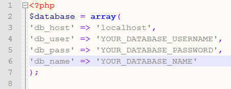
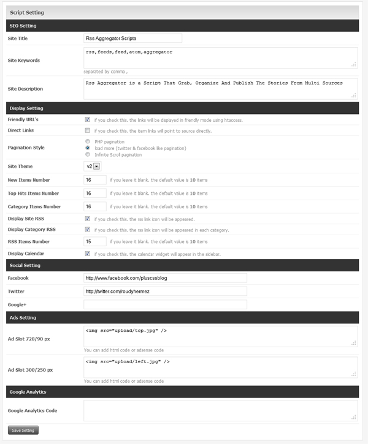
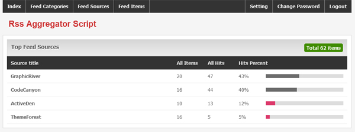
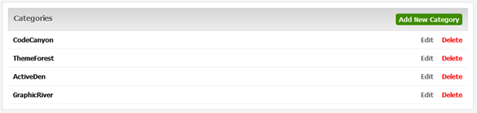
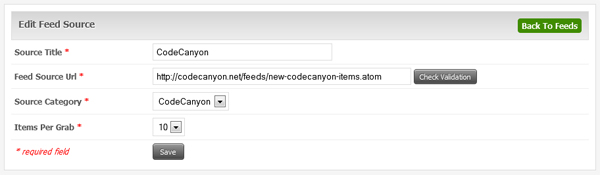
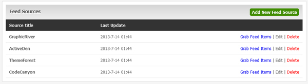
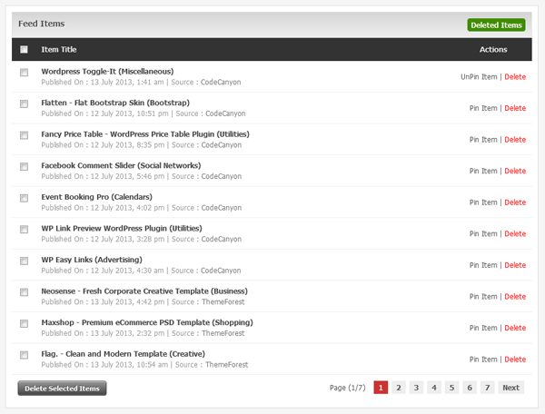
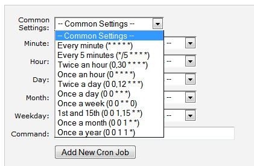

“RSS Aggregator V1.0” Documentation by “WebBag.us” v1.2
“RSS Aggregator V1.0”
Thank you for purchasing my script. If you have any questions that are beyond the scope of this help file, please feel free to email via my user page contact form here. Thanks so much!
Table of Contents
- Features
- Install
- Usage
- Setting Cronjob
- Requirements & Credits
A) Features - top
RSS Aggregator V1.0 comes with features such as :
1) friendly urls control (on - off).
2) three pagination styles (simple php - load more - infinite scroll).
3) archive calendar (browse posts by date) .
4) RSS for the new posts and for each category.
5) SEO-Compatible Sitemap.
6) 960 grid system templates.
7) moderated social links (facebook - twitter - facebook).
8) option to add google analytics code from setting page
9) new page (feed page)
B) Install - top
Install RSS Aggregator Script
1) Unpack the archive.
2) Upload files from "rss_aggregator" folder to your site.
3) Change the database settings in config.php file (located in include folder) to yours.

4) Excute The "include/install.php" file. (contains two options upgrade or fresh install)
5) Make the folder (cache) writable, with the permissions of 0777 or 0755 as your server setting.
6) Then go to admin.php page in http://www.YOUR-DOMAIN.com/RSS_AGGREGATOR_SCRIPT_FOLDER/admin/login.php
login with
username : admin
password : demo
you can change your password later from the control panel.
C) Usage - top
Setting Page : contains the
SEO setting,
Display Setting,
Ads Setting,
Ads Setting and
google analytics Setting
1) SEO Setting : is used for the search bots. fill it with your details. dont forget to separate the Keywords with commas
,
2) Display Setting : is used to define the site template and the number of items in home page, top hits page and category page, also in v2 it contains the friendly url option and the pagination styles and the capability to display rss and control the number of rss items .
3) Social Setting : You Can Add Your social networks profiles easily.
4) Ads Setting : There are two ad spaces in template with standard dimensions of 728-90 px and 300-250 px. (you can insert a HTML code or Adsense code).
5) Google Analytics Tracking Code.

Index Page : contains simple statistics about the feed sources.

Categories Page : control the categories Add, Edit and Delete.

Add Feed Page :
1) Source Title : this field value is the title of the website or the part of website that the feed is derived.
2) Feed Source Url : the absolute url to the feed link.
( for feedburner.com feeds, the script add ?format=xml to the end of feed url automatically. )
3) Source Category : you can't add feed source before adding at least one category.
4) Items Per Grab : the number of the feed items that will be grabbed every time.

Feeds Page :
To grab a Feed Items manually, just click on the ajax link
(Grab Feed Items) behind every Feed Source Title.

Feed Items Page :
You can (pin - unpin) items; make the item stick to the top list of items in category page.
You can (delete - restore) items; the script doesn't delete the items from database. just hides it.
(you can get the deleted items by clicking on Deleted Items link)

D) Setting Cronjob - top
to prepare a cronjob command to grab the feeds sources automatically :
enter the (Add New Cron Job) from your site CPanel

choose the common setting according to your server specifications. (we recommend to choose twice a day).
in the command input put
php -q /home/YOUR-ACCOUNT/PATH-TO-CRON-FILE/cron.php
substitute YOUR-ACCOUNT by yours;
most times this value is like the domain name e.g: codecanyon, webbagus without www or .com etc.
substitute PATH-TO-CRON-FILE by the path that you have installed the script in relating to your web root.
e.g : public_html/rss_aggregator_script/
the command will be :
php -q /home/webbagus/public_html/rss_aggregator/cron.php
you can change the cron.php filename to the name you want in order to keep it secure.
E) Requirements & Credits - top
RSS Aggregator Script requires :
1) PHP 5.2 or more.
2) MySQL database
3) file_get_contents() function.
RSS Aggregator Script uses :
1) Smarty Templates.
2) SimplePie php lib.
3) JQuery lib.
Once again, thank you so much for purchasing this script. As I said at the beginning, I'd be glad to help you if you have any questions relating to this script. No guarantees, but I'll do my best to assist.
Chanifuddin Fanani
Go To Table of Contents